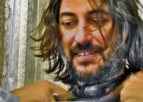
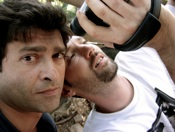

Lama Film


SINOSSI
Un produttore cinematografico indipendente, americano, è incuriosito dall’esistenza di un film lungometraggio incompiuto, girato dodici anni prima nel sud est della Spagna da un gruppo di coraggiosi giovani esordienti, molti dei quali avevano avuto successo a partire da quella occasione. “L'equipaggio” era stato il migliore e il più brillante gruppo di non-conformisti fuoriuscito, appena diplomato, dalla scuola di cinema di fama mondiale: il “Centro Sperimentale di Cinematografia” a Roma; ed il primo passo della loro carriera aveva avuto inizio proprio in Spagna. Il “ capitano di vascello” era stato un giovane spagnolo di nome Alex Fortuna, di cui non si sapeva più nulla, era “scomparso dalle carte geografiche”. Il film “El Infierno Prometido” (The Promised Hell) che aveva preso ispirazione dal mito di Orfeo, era un misto tra la reminiscenza classica e la realtà quotidiana vista con gli occhi di un contemporaneo, attraverso un mondo rurale, mediterraneo, ancora sorprendente e senza tempo. La produzione si interruppe bruscamente quando improvvisamente il finanziamento si fermò e i 17.000 metri di pellicola girata da Alex Fortuna e la sua troupe furono dimenticati in fondo ad un magazzino polveroso nei leggendari stabilimenti cinematografici romani di Cinecittà.
Nell'estate del 2008, la scrittrice Patricia Hart, un amica personale del produttore, si reca in Italia in compagnia di un cameraman per intervistare i co-produttori italiani del film e produrre su nastro la documentazione delle proprie indagini. La sua intenzione è quella di individuare la bobina di 47 minuti di “montato”, che il regista Alex Fortuna era riuscito a mettere assieme in un vano tentativo di rilanciare il progetto.
Patricia decide di andare a Murcia, in Spagna con l'obiettivo donchisciottesco di vedere se la lavorazione,”l'immagine”, del film dopo la lunga interruzione possa essere finita. A tale scopo, intervista i personaggi del cast e della troupe che riesce a trovare, e visita le locations del film per vedere ciò che è rimasto invariato e che si possa utilizzare. Racconti contraddittori emergono sulla sorte di Fortuna e la sua dislocazione, quando finalmente Patricia scopre che Alex aveva passato un periodo in Messico dove era tornato sull’idea di rifare lo stesso film da capo senza rivelare a nessuno nulla del suo precedente fallimento.
Ma il vero problema non è solo la ricerca di Alex ma anche il confrontarsi con il passato, in virtù di questa parziale realizzazione di un sogno che si sarebbe potuto materializzare ma che di fatto non era accaduto mai.
L’essenza è radicata in Alex, nei suoi”demoni”, in come si serva del cinema come metafora della morte e al tempo stesso, come un sinonimo inevitabile per la vita. Dopo che Patricia e tutto il resto sono stati “all' inferno e tornati” ripercorrendo gli stessi passi di Alex, la risposta è quella di prendere il film e portarlo indietro, in un sito vissuto, senza voltarsi e farsi prendere da un momento di dubbio che significa perderlo per sempre. Il film svela i segreti di una terra misteriosa con sorprendenti situazioni e aneddoti (illustrate con delle immagini documentaristiche, che servono da contrappunto alle immagini stilizzate, di alcune sequenze del film originale girato in 35 mm)
Alla fine, ci ritroviamo con le parole del poeta, Pier Paolo Pasolini: "Perché fare un opera d'arte quando è così bello solo sognarla".
The unmaking of

